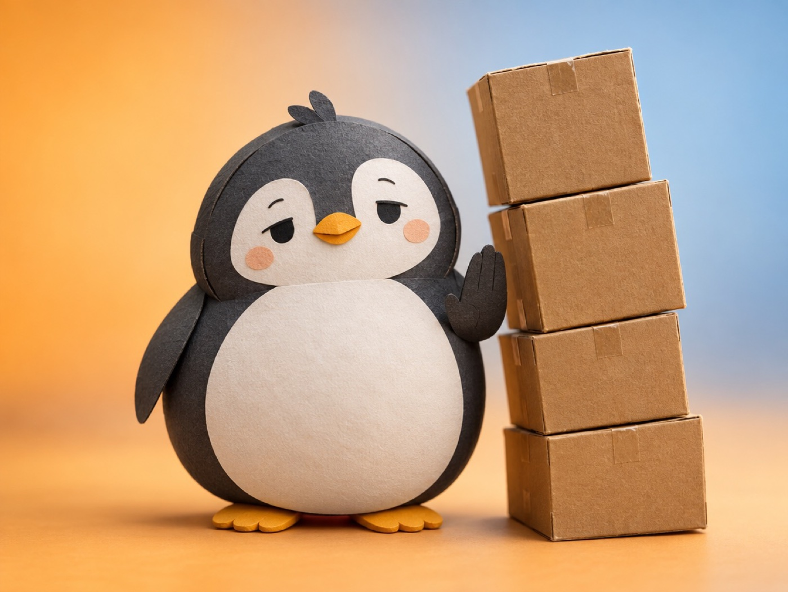

🧪 LAB · 試作 — AIが読書メモから一気に作った記事です。本番の一覧には出していません · 試作の一覧
🐧 EVERYDAY LIFE⚡ 34 SEC
If you say yes to everything, people start to use you 📦

Sound Familiar
If you say "sure" to every request, people thank you a lot at first.
But little by little, it becomes "normal."
What Happens
The thanks get fewer, and soon people complain when you are just a little late.
Then everyone starts to think, "Just give the hard stuff to that person."
The Reason
This is because when the same person always does it, people around think it is that person's role.
⚡ TRY IT
The "Sure!" button
Keep tapping "Sure!" and watch the "thank you" get smaller.
📩 Can you carry this box?
📩 Can you buy me a juice?
📩 Can you clean my room too?
📩 Can you wait in line for me?
📩 Can you take out my trash?
📩 Can you lend me your umbrella? Again?
📩 Can you do the dishes too?
📩 Can you just do everything?
Hey, can I ask you something?
THANK YOU SO MUCH!!
Thank you so much!
Thanks!
Thx.
Mm.
…
Huh? Why so slow?
Hurry up. And this too.
Oh, OK! Thanks for always helping me.
Of course! You always help me, so it's my turn.
💛 Thanks
📦 Your load
Tap "Sure!" many times. Then try the small buttons.
😵 You became "the one who does everything." Try "Sorry, not today."
⚖️ Balance is back. Kind, but not too much.
Try This
Sometimes, try saying no: "Sorry, not today."
And when you are in trouble, ask others, "Can you help me?"
In Short
Be kind, but not too much, and make a friendship where you help each other.
📚 I wrote this from my reading notes.